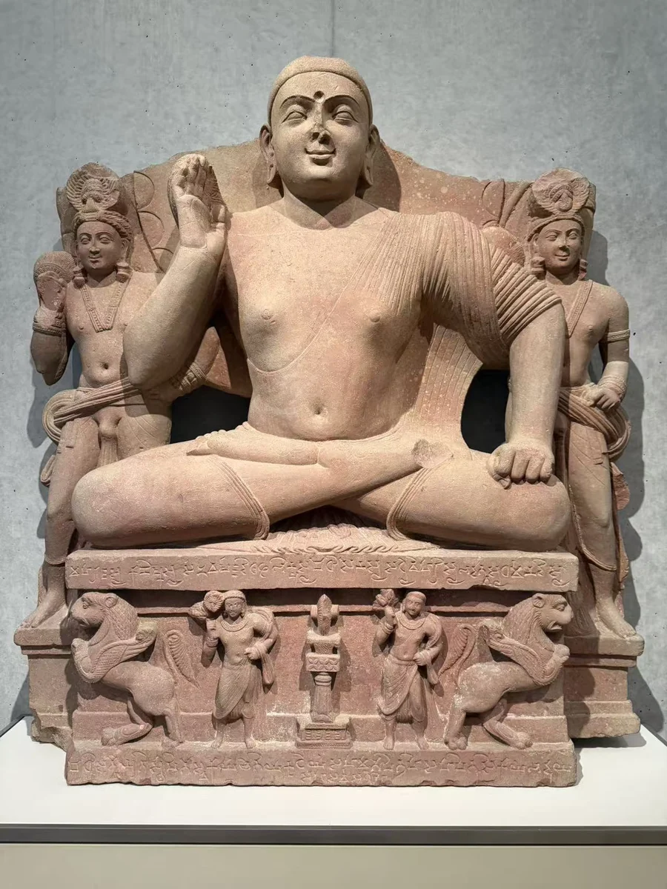
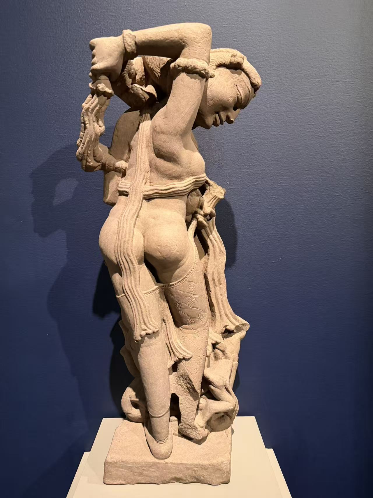

SOUTH ASIAN ART
南亚艺术
从佛塔到神庙，走近不同的形象与信仰。

EARLY BUDDHIST ART
早期佛教艺术
从早期佛塔艺术到笈多及其余绪，沿着身体、衣纹与礼拜重新看。
走进这一辑 →
KHAJURAHO
克久拉霍：众神、天女与情侣
从神庙外墙到供奉神龛，近看身体、首饰与雕像原来的位置。
走进这一辑 →
STONE · BUDDHIST & HINDU ART
帕拉黑石造像
从佛的一生到众神的故事，沿24件亲见石像，认识东印度的寺院、神庙与供养者。
进入专题 →
CHOLA BRONZES · SOUTH INDIA
朱罗青铜造像
从舞王的火焰到圣徒的赞歌，沿亲见铜像走进南印度的神庙与史诗。
进入专题 →